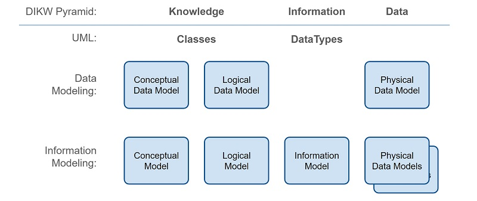
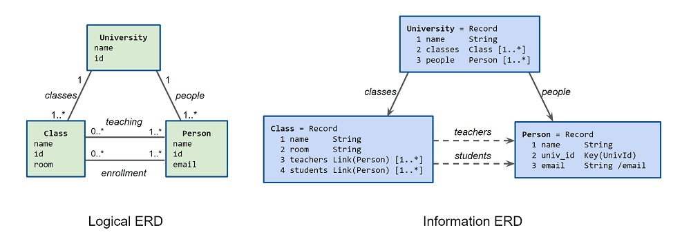

https://docs.oasis-open.org/openc2/jadn/v1.0/cs01/jadn-v1.0-cs01.md (Authoritative)
https://docs.oasis-open.org/openc2/jadn/v1.0/cs01/jadn-v1.0-cs01.html
https://docs.oasis-open.org/openc2/jadn/v1.0/cs01/jadn-v1.0-cs01.pdf
https://docs.oasis-open.org/openc2/jadn/v1.0/csd02/jadn-v1.0-csd02.md (Authoritative)
https://docs.oasis-open.org/openc2/jadn/v1.0/csd02/jadn-v1.0-csd02.html
https://docs.oasis-open.org/openc2/jadn/v1.0/csd02/jadn-v1.0-csd02.pdf
https://docs.oasis-open.org/openc2/jadn/v1.0/jadn-v1.0.md (Authoritative)
https://docs.oasis-open.org/openc2/jadn/v1.0/jadn-v1.0.html
https://docs.oasis-open.org/openc2/jadn/v1.0/jadn-v1.0.pdf
OASIS Open Command and Control (OpenC2) TC
Duncan Sparrell (duncan@sfractal.com), sFractal Consulting LLC
David Kemp (d.kemp@cyber.nsa.gov), National Security Agency
This prose specification is one component of a Work Product that also includes:
JSON Abstract Data Notation (JADN) is a UML-based information modeling language that defines data structure independently of data format. Information models are used to define and generate physical data models, validate information instances, and enable lossless translation across data formats. A JADN specification consists of two parts: type definitions that comprise the information model, and serialization rules that define how information instances are represented as data. The information model is itself an information instance that can be serialized and transferred between applications. The model is documented using a compact and expressive interface definition language, property tables, or entity relationship diagrams, easing integration with existing design processes and architecture tools.
This document was last revised or approved by the OASIS Open Command and Control (OpenC2) TC on the above date. The level of approval is also listed above. Check the "Latest stage" location noted above for possible later revisions of this document. Any other numbered Versions and other technical work produced by the Technical Committee (TC) are listed at https://www.oasis-open.org/committees/tc_home.php?wg_abbrev=openc2#technical.
TC members should send comments on this specification to the TC's email list. Others should send comments to the TC's public comment list, after subscribing to it by following the instructions at the "Send A Comment" button on the TC's web page at https://www.oasis-open.org/committees/openc2/.
This specification is provided under the Non-Assertion Mode of the OASIS IPR Policy, the mode chosen when the Technical Committee was established. For information on whether any patents have been disclosed that may be essential to implementing this specification, and any offers of patent licensing terms, please refer to the Intellectual Property Rights section of the TC's web page (https://www.oasis-open.org/committees/openc2/ipr.php).
Note that any machine-readable content (Computer Language Definitions) declared Normative for this Work Product is provided in separate plain text files. In the event of a discrepancy between any such plain text file and display content in the Work Product's prose narrative document(s), the content in the separate plain text file prevails.
The key words "MUST", "MUST NOT", "REQUIRED", "SHALL", "SHALL NOT", "SHOULD", "SHOULD NOT", "RECOMMENDED", "NOT RECOMMENDED", "MAY", and "OPTIONAL" in this document are to be interpreted as described in BCP 14 [RFC2119] and [RFC8174] when, and only when, they appear in all capitals, as shown here.
When referencing this specification the following citation format should be used:
[JADN-v1.0]
JSON Abstract Data Notation Version 1.0. Edited by David Kemp. 17 August 2021. OASIS Committee Specification 01. https://docs.oasis-open.org/openc2/jadn/v1.0/cs01/jadn-v1.0-cs01.html. Latest stage: https://docs.oasis-open.org/openc2/jadn/v1.0/jadn-v1.0.html.
Copyright © OASIS Open 2021. All Rights Reserved.
Distributed under the terms of the OASIS IPR Policy.
The name "OASIS" is a trademark of OASIS, the owner and developer of this specification, and should be used only to refer to the organization and its official outputs.
For complete copyright information please see the Notices section in the Appendix.
RFC 3444, "Information Models and Data Models", notes that the main purpose of an information model is to model objects at a conceptual level, independent of specific implementations or protocols used to transport the data. RFC 8477, "IoT Semantic Interoperability Workshop 2016", describes a lack of consistency across Standards Developing Organizations in defining application layer data, attributing it to the lack of an encoding-independent standardization of the information represented by that data. This document defines an information modeling language intended to address that gap. JADN is a formal description technique that combines type constraints from the Unified Modeling Language UML with data abstraction based on information theory and structural organization using results from graph theory.
As shown in Figure 1, industry has multiple, often conflicting definitions of data modeling terms, including the term "Information Engineering", which at one time referred to data modeling but is now more closely aligned with information theory and machine learning.

UML class models and diagrams are commonly referred to as "Data Models", but they model knowledge of real-world entities using classes. In contrast, information models model data itself using datatypes. A practical distinction is that class models are undirected graphs with an unlimited variety of classes and semantic relationships, while information models are directed graphs with a small predefined set of base datatypes and only two kinds of relationship: "contain" and "reference". Designing an information model from a class/logical model is largely a matter of assigning the kind and direction of each relationship, establishing identifiers for all referenceable datatypes, and selecting the kind of each datatype from among the base types defined by an information modeling language. Converting an information model to a data model means applying serialization rules for each base type that produce physical data in the desired format.
Information: A measure of the entropy (novelty, or "news value") of a message. Information is the minimum data needed to represent the essential meaning of a message, excluding data that is known a priori and data that does not affect meaning.
Information Model: An abstract schema that defines the structure and value constraints of information used within and across applications, irrespective of data format.
Data Model: A concrete schema that defines the structure and value constraints of serialized data. A single information model corresponds to multiple equivalent data models; two data models are equivalent if they represent the same information.
Graph: A mathematical structure used to model pairwise relationships between objects. An information model is a graph where nodes are information type definitions and edges are relationships between types.
Package: A container that defines a namespace for the set of types it contains. A type can reference types from another package using the referenced namespace.
Document: A series of octets described by a data format applied to an information model, or equivalently, by a data model.
Well-formed: A well-formed document follows the syntactic structure of the document's media type.
Valid: An instance is valid if it satisfies the constraints defined in an information model. A document is valid if it is well-formed and also corresponds to a valid instance.
Data Format: A data format, defined by serialization rules, specifies the media type (XML, JSON, Protobuf, ...), design goals (human readability, efficiency), and style preferences for documents in that format.
Instance: An instance, or API value, is an item of information that satisfies the structure and value constraints defined by a type. Types are defined by an information modeling language; JADN built-in types are:
Instance Equality: Two instances are equal if and only if they are of the same type and have the same information value. Formatting differences, including a document's data format, are insignificant. An IPv4 address serialized as a JSON dotted-quad is equal to an IPv4 address serialized as a CBOR byte string if and only if they have the same 32 bit value. A Record instance serialized as an array is equal to a Record instance serialized as a map if and only if they have the same keys and the same value for each key.
Serialization: Serialization, or encoding, converts application information into a document. De-serialization, or decoding, converts a document into information instances usable by applications.
Description: Description elements are reserved for comments from schema authors to readers or maintainers of the schema, and are ignored by applications using the schema.
Information is what needs to be communicated between applications, and data is how that information is represented when communicating. More formally, information is the unexpected data, or entropy, contained in a document. When information is serialized for transmission in a canonical format, the additional data used for purposes such as text conversion, delimiting, and framing contains no information because it is known a priori. If the serialization is non-canonical, any additional entropy introduced during serialization (e.g., whitespace, leading zeroes, field reordering, case-insensitive capitalization) is discarded on deserialization.
A variable that can take on 2^N different values conveys at most N bits of information. For example, an IPv4 address that can specify 2^32 different addresses is, by definition, a 32 bit value*. But different data may be used to represent that information:
The 13 extra bytes used to format a 4 byte IP address as a dotted quad are useful for display purposes, but provide no information to the receiving application. Field names and enumerated strings selected from a dozen possibliities convey less than four bits of information, while the strings themselves may be half a dozen to hundreds of bytes of data. By distinguishing information from data, information modeling is key to effectively using both binary data formats such as Protobuf and CBOR and text formats such as XML and JSON.
* Note: all references to information assume independent uniformly-distributed values. Non-uniform or correlated data contains less than one byte of information per data byte, but source coding is beyond the scope of this specification.
A JADN information model is a set of type definitions (Section 3.1). Each field in a structured type may be associated with another model-defined type, and the set of associations between types forms a directed graph. Each association is either a container or a reference, and the direction of each edge is toward the contained or referenced type.
The container edges of an information model must be acyclic in order to ensure that:
There is no restriction on reference edges, so any container cycles in a model can be broken by converting one or more containers to references.
Logical models are undirected graphs, and a few results from graph theory are useful when constructing information models from logical models:
A DAG can be refactored into another DAG having the same underlying undirected graph, and two information models with the same underlying graph correspond to the same logical model.
A DAG can be converted to a directed tree by denormalizing (copying subtrees below multi-parent nodes), and a directed tree can be converted to a DAG by normalizing (combining identical subtrees). Reuse of common types is an important goal in both design of information models and analysis of data. However, it is sometimes useful to have a tree-structured representation of a document's structure. Converting a DAG into a directed tree supports applications such as model queries that are otherwise difficult to implement, tree-structured content statistics, content transformations, and documentation.
Data modeling in the conceptual/logical/physical sense is a top-down process starting with goals and ending with a physical data model. But in practice "data modeling" is often a bottom-up exercise that begins with a collection of desired data instances and ends with a concrete schema. That process could be called data-centric design, in contrast with information-centric design which begins with a set of types that reflect purpose rather than syntax. Because an information model is a graph, information-centric design integrates easily with conceptual and logical models, allowing bottom-up and top-down approaches to meet in the middle.
| Data-centric | Information-centric |
|---|---|
| A data definition language defines a specific data storage and exchange format. | An information modeling language expresses application needs in terms of desired effects. |
| Serialization-specific details are built into applications. | Serialization is a communication function like compression and encryption, provided to applications. |
| JSON Schema defines integer as a value constraint on the JSON number type. | Distinct Integer and Number types reflect mathematical properties regardless of data representation. |
| CDDL types: "While arrays and maps are only two representation formats, they are used to specify four loosely-distinguishable styles of composition". | The five structured types are defined unambiguously in terms of composition characteristics. Each type can be represented in multiple data formats. |
| No table composition style exists. | Tables are a fundamental way of organizing information. The Record type holds tabular information that can be represented as either arrays or maps in multiple data formats. |
| Instance equality is defined at the data level. | Instance equality is defined in ways meaningful to applications. For example "Optional" and "Nullable" are different at the data level but applications make no logical distinction between "not present" and "present with null value". Record data values in array and map formats are different at the data level but their information instances can be compared for equality. |
| Data-centric design is often Anglocentric, embedding English-language identifiers in protocol data. | Information-centric design encourages definition of natural-language-agnostic protocols while supporting localized text identifiers within applications. |
Information-centric design promotes consensus when faced with conflicting developer preferences. Because information is the "substance" of a message, separating substance (information) from style (data format) may make it easier to agree on an information model first, deferring debate on data formats. JADN defines three kinds of information that have alternate representations:
These alternatives can be grouped into distinct serialization styles:
| Style: | Verbose repeated name-value pairs |
Compact element / property names-values |
Concise machine-to-machine optimized |
|---|---|---|---|
| Primitives | Text Representation | Text Representation | Integer / Binary / Base64 |
| Enumerations | String | String | Integer |
| Table Rows | Column Name | Column Position | Column Position |
A data format is a serialization style applied to a data language: "Compact JSON", "Concise JSON", "Compact XML", "Verbose CBOR", etc. JSON and XML Transformations uses the terms "Friendly" for XML and JSON encodings that associate data types directly with variables and "Unfriendly" for encodings that use repeated variable names in name-value pairs. JADN uses Compact and Verbose respectively to refer to those styles. The name "Verbose" is intended to be descriptive rather than pejorative, as opposed to "Unfriendly". An information model allows designers to compare Verbose and Compact styles for usability, and allows data to be validated and successfully round tripped between a readable JSON style and an actually concise CBOR style.
Reverse-engineering an information model from existing data models allows commonalities and incompatibilities to be identified, facilitating convergence across multiple specifications with similar goals.
Google Protocol Buffers (Protobuf) is a typical data definition language. A Protobuf definition looks like:
message Person {
required string name = 1;
required int32 id = 2;
optional string email = 3;
}
The corresponding JADN definiton in IDL format (Section 5) is structurally similar:
Person = Record
1 name String
2 id Integer
3 email String optional
Property tables (also Section 5) include the same content:
Type: Person (Record)
| ID | Name | Type | # | Description |
|---|---|---|---|---|
| 1 | name | String | 1 | |
| 2 | id | Integer | 1 | |
| 3 | String | 0..1 |
The normative form of a JADN type definition (Section 3) is JSON data:
["Person", "Record", [], "", [
[1, "name", "String", [], ""],
[2, "id", "Integer", [], ""],
[3, "email", "String", ["[0"], ""]
]]
IDL or property tables are preferred for use in documentation, but conformance is based on normative JSON data.
Two general approaches can be used to implement IM-based protocol specifications:
Implementations based on serialization-specific code interoperate with those using an IM serialization library, allowing developers to use either approach.
An information modeling language's types are defined in terms of the characteristics they provide to applications. JADN's base types are:
| Type | Definition |
|---|---|
| Primitive | |
| Binary | A sequence of octets. Length is the number of octets. |
| Boolean | An element with one of two values: true or false. |
| Integer | A positive or negative whole number. |
| Number | A real number. |
| String | A sequence of characters, each of which has a Unicode codepoint. Length is the number of characters. |
| Enumeration | |
| Enumerated | A vocabulary of items where each item has an id and a string value |
| Specialization | |
| Choice | A discriminated union: one type selected from a set of named or labeled types. |
| Structured | |
| Array | An ordered list of labeled fields with positionally-defined semantics. Each field has a position, label, and type. |
| ArrayOf(vtype) | A collection of fields with the same semantics. Each field has type vtype. Ordering and uniqueness are specified by a collection option. |
| Map | An unordered map from a set of specified keys to values with semantics bound to each key. Each key has an id and name or label, and is mapped to a value type. |
| MapOf(ktype, vtype) | An unordered map from a set of keys of the same type to values with the same semantics. Each key has key type ktype, and is mapped to value type vtype. |
| Record | An ordered map from a list of keys with positions to values with positionally-defined semantics. Each key has a position and name, and is mapped to a value type. Represents a row in a spreadsheet or database table. |
As described in Table 3-1, JADN structured types define if their members are Ordered and/or Unique. They also distinguish between homogeneous collections where all members have the same type and heterogeneous collections where each member has a specified type. For homogeneous collections JADN uses the single "ArrayOf" type with a set, unique or unordered option (Section 3.2.1) rather than defining separate names for each collection type.
| Ordered | Unique | Traditional Name |
JADN Same Type |
JADN Specified Type |
|---|---|---|---|---|
| false | true | Set | ArrayOf+set, MapOf | Map |
| true | false | Sequence | ArrayOf | Array |
| true | true | OrderedSet | ArrayOf+unique | Record |
| false | false | Bag | ArrayOf+unordered | none |
Accessing an element of a collection whose values are neither ordered nor unique returns an arbitrarily-chosen element. Elements of other collections are deterministically accessed by position, value, or for the Record type either position or value.
JADN type definitions have a fixed structure designed to be easily describable, easily processed, stable, and extensible.
Every definition has five elements:
If BaseType is a Primitive type, ArrayOf, or MapOf, the Fields array MUST be empty:
If BaseType is Enumerated, each item definition in the Fields array MUST have three elements:
If BaseType is Array, Choice, Map, or Record, each field definition in the Fields array MUST have five elements:
The elements are serialized in JSON format as:
[TypeName, BaseType, [TypeOption, ...], TypeDescription, []] (primitive)
[TypeName, BaseType, [TypeOption, ...], TypeDescription, [ (enumerated)
[ItemId, ItemValue, ItemDescription],
...
]]
[TypeName, BaseType, [TypeOption, ...], TypeDescription, [ (structured)
[FieldID, FieldName, FieldType, [FieldOption, TypeOption, ...], FieldDescription],
...
]]
The same type definition structure can be populated with various levels of detail. At the conceptual level, only TypeName is present, along with FieldType for attributes that reference other model-defined types. At the logical level FieldName is populated for both base and reference attribute types. In a full information model, all Type and Options elements are defined:

Including TypeOption values within FieldOptions is an extension (Section 3.3.1).
JADN does not restrict the syntax of TypeName and FieldName, but naming conventions can aid readability of specifications.
ABNF:
TypeName = UC *63("-" / Sys / UC / LC / DIGIT) ; PascalCase / Train-Case, 1-64 characters
FieldName = LC *63("_" / UC / LC / DIGIT) ; camelCase / snake_case, 1-64 characters
NSID = (UC / LC) *7(UC / LC / DIGIT) ; Namespace ID, length = 1-8 characters
TypeRef = [NSID ":"] TypeName ; Reference to a defined type with optional namespace prefix
Sys = "$" ; 'DOLLAR SIGN', Used in tool-generated type names, e.g., Color$values.
UC = %x41-5A ; A-Z
LC = %x61-7A ; a-z
DIGIT = %x30-39 ; 0-9
Regular Expression:
TypeName: ^[A-Z][-$A-Za-z0-9]{0,63}$
FieldName: ^[a-z][_A-Za-z0-9]{0,63}$
NSID: ^[A-Za-z][A-Za-z0-9]{0,7}$
Specifications MAY use the same syntax for TypeName and FieldName. Using distinct formats may aid understanding but does not affect the meaning of type definitions.
Type definitions for variable-length types may include maximum size limits using the maxv option defined in Section 3.2.1. If an individual type does not define an explicit limit, it uses the limit shown in the package's $MaxBinary, $MaxString, or $MaxElements configuration variable (Section 6). If the specification does not define a limit, the definition defaults to the values shown here, which are deliberately conservative to encourage specification authors to define limits based on application requirements.
Type Name Limit Description
----- ----- ----- -----------
Binary $MaxBinary 255 Maximum number of octets
String $MaxString 255 Maximum number of characters
Array, ArrayOf, $MaxElements 100 Maximum number of items/properties
Map, MapOf, Record
Description elements (TypeDescription, ItemDescription and FieldDescription) are reserved for comments from schema authors to readers or maintainers of the schema.
Description values MAY be used in debug or error output which is intended for developers making use of schemas. Tools that translate other media types or programming languages to and from a JADN schema MAY choose to convert that media type or programming language's native comments to or from description values. Implementations MAY strip description values at any point during processing.
This section defines the mechanism used to support a varied set of information needs within the strictly regular structure of Section 3.1. New requirements can be accommodated by defining new options without modifying that structure. Type and Field options are classifiers that, along with the base type, determine whether data values are instances of the defined type.
Each option is a text string that may be included in TypeOptions or FieldOptions, encoded as follows:
Type options apply to the type definition as a whole. The id, vtype, ktype, enum, and pointer options are intrinsic components of the types to which they apply. Other options specify value constraints on the type.
TypeOption = Choice
61 id Boolean // '=' Items and Fields are denoted by FieldID rather than FieldName (Section 3.2.1.1)
42 vtype String // '*' Value type for ArrayOf and MapOf (Section 3.2.1.2)
43 ktype String // '+' Key type for MapOf (Section 3.2.1.3)
35 enum String // '#' Extension: Enumerated type derived from a specified type (Section 3.3.3)
62 pointer String // '>' Extension: Enumerated type pointers derived from a specified type (Section 3.3.5)
47 format String // '/' Semantic validation keyword (Section 3.2.1.5)
37 pattern String // '%' Regular expression used to validate a String type (Section 3.2.1.6)
121 minf Number // 'y' Minimum real number value (Section 3.2.1.7)
122 maxf Number // 'z' Maximum real number value
123 minv Integer // '{' Minimum integer value, octet or character count, or element count (Section 3.2.1.7)
125 maxv Integer // '}' Maximum integer value, octet or character count, or element count
113 unique Boolean // 'q' ArrayOf instance must not contain duplicate values (Section 3.2.1.8)
115 set Boolean // 's' ArrayOf instance is unordered and unique (Section 3.2.1.9)
98 unordered Boolean // 'b' ArrayOf instance is unordered (Section 3.2.1.10)
88 extend Boolean // 'X' Type is extensible; new Items or Fields may be appended (Section 3.2.1.11)
33 default String // '!' Default value (Section 3.2.1.12)
| BaseType | Allowed Options |
|---|---|
| Binary | minv, maxv, format |
| Boolean | |
| Integer | minv, maxv, format |
| Number | minf, maxf, format |
| String | minv, maxv, format, pattern |
| Enumerated | id, enum, pointer, extend |
| Choice | id, extend |
| Array | extend, format, minv, maxv |
| ArrayOf | vtype, minv, maxv, unique, set, unordered |
| Map | id, extend, minv, maxv |
| MapOf | vtype, ktype, minv, maxv |
| Record | extend, minv, maxv |
The id option used with Enumerated, Choice, and Map types determines how fields are specified in API instances of these types. If the id option is absent, API instances use the FieldName string and the type is referred to as "named". If the id option is present, API instances use the FieldID tag and the type is referred to as "labeled". The Record type is always named and has no id option; the Array type is its labeled equivalent.
For example an Enumerated list of HTTP status codes could include the field [403, "Forbidden"]. If the type definition does not include an id option, the API value is "Forbidden" and serialization rules determine whether FieldID or FieldName is used in serialized data. With the id option the API and serialized values are always the FieldID 403. The label "Forbidden" may be displayed in messages or user interfaces, as could customized labels such as "NotAllowed", "Verboten", or "Interdit".
The vtype option specifies the type of each field in an ArrayOf or MapOf type. It may be any JADN type or Defined type.
The ktype option specifies the type of each key in a MapOf type.
The enum (Section 3.3.3) and pointer (Section 3.3.5) options are extensions that create an Enumerated type derived from a referenced Array, Choice, Map or Record type.
The format option value is a semantic validation keyword. Each keyword specifies validation requirements for a fixed subset of values that are accurately described by authoritative resources. The format option may also affect how values are serialized, see Section 4.
| Keyword | Type | Requirement |
|---|---|---|
| JSON Schema formats | String | All semantic validation keywords defined in Section 7.3 of JSON Schema. |
| eui | Binary | IEEE Extended Unique Identifier (MAC Address), EUI-48 or EUI-64 as specified in EUI |
| ipv4-addr | Binary | IPv4 address as specified in RFC 791 Section 3.1 |
| ipv6-addr | Binary | IPv6 address as specified in RFC 8200 Section 3 |
| ipv4-net | Array | Binary IPv4 address and Integer prefix length as specified in RFC 4632 Section 3.1 |
| ipv6-net | Array | Binary IPv6 address and Integer prefix length as specified in RFC 4291 Section 2.3 |
| i8 | Integer | Signed 8 bit integer, value must be between -128 and 127. |
| i16 | Integer | Signed 16 bit integer, value must be between -32768 and 32767. |
| i32 | Integer | Signed 32 bit integer, value must be between -2147483648 and 2147483647. |
| u<n> | Integer | Unsigned integer or bit field of <n> bits, value must be between 0 and 2^<n> - 1. |
The pattern option specifies a regular expression used to validate a String instance.
The minv and maxv options specify size or integer value limits. The minf and maxf options specify real number value limits.
The unique option specifies that values in an array must not be repeated.
The set option specifies that an ArrayOf type is unordered and unique.
The unordered option specifies that an ArrayOf type may contain duplicate values and that its values have no defined order. Because values cannot be selected by value or position, it has the semantics of a "bag" or "urn" from which elements are picked at random.
The extend option is an assertion that an Enumerated, Choice, Array, Map or Record type MAY be incomplete and that future versions MAY add new fields that do not change the definitions of existing fields. This option does not affect the validity of data with respect to a specific schema, it is an indicator that applications may be able to obtain a newer version of the same package for which the data is valid. Types without this option assert that the package identifier will be changed if any field is added, modified, or deleted.
The default option specifies the initial or default value of a field. Applications deserializing a document MUST initialize an unspecified type with its default value. Serialization behavior is not defined; applications MAY omit or populate fields whose values equal the default.
Field options may be specified for each field within a structured type definition.
FieldOption = Choice
91 minc Integer // '[' Minimum cardinality, default = 1, 0 = optional (Section 3.2.2.1)
93 maxc Integer // ']' Maximum cardinality, default = 1, 0 = default max, >1 = array
38 tagid Enumerated // '&' Field containing an explicit tag for this Choice type (Section 3.2.2.2)
60 dir Boolean // '<' Pointer enumeration treats field as a group of items (Extension: Section 3.3.5)
75 key Boolean // 'K' Field is a primary key for this type (Extension: Section 3.3.6)
76 link Boolean // 'L' Field is a foreign key reference to a type instance (Extension: Section 3.3.6)
Cardinality is the number of elements in a group, and multiplicity is the range of allowed cardinalities for that group. The minc and maxc options specify the minimum and maximum cardinality in a field of an Array, Choice, Map, or Record type:
| minc | maxc | Multiplicity | Description | Keywords |
|---|---|---|---|---|
| 0 | 1 | 0..1 | No instances or one instance | optional |
| 1 | 1 | 1 | Exactly one instance | required |
| 0 | 0 | 0..* | Zero or more instances | optional, repeated |
| 1 | 0 | 1..* | At least one instance | required, repeated |
| m | n | m..n | At least m but no more than n instances | required, repeated |
If minc is 0, the field is optional, otherwise it is required.
If maxc is 1 the field is a single element, otherwise it is an array of elements as described in Section 3.3.2.
Within a Choice type minc values of 0 and 1 are equivalent because all fields are optional and exactly one must be present. Values greater than 1 specify an array of elements.
The Choice type represents a Discriminated Union, a data structure that could take on several different, but fixed, types. By default a Choice is a Map with exactly one key-value pair, where the key determines the value type. But if the tagid option is present on a Choice field in an Array or Record container, it indicates that a separate Tag field within that container determines the value type.
Example:
Product = Choice // Discriminated union
1 furniture Furniture
2 appliance Appliance
3 software Software
Dept = Enumerated // Explicit Tag values derived from the Choice
1 furniture
2 appliance
3 software
Software = String /uri
Stock1 = Record // Discriminated union with intrinsic tag
1 quantity Integer
2 product Product // Value = Map with one key/value
Stock2 = Record // Container with explicitly-tagged discriminated union
1 dept Dept // Tag = one key from Choice
2 quantity Integer
3 product Product(TagId[dept]) // Choice specifying an explicit tag field
Example JSON serializations of these types are:
Stock1 - Choice with intrinsic tag:
{
"quantity": 395,
"product": {"software": "http://www.example.com/B902D1P0W37"}
}
Stock2 - Choice with explicit tag:
{
"dept": "software",
"quantity": 395,
"product": "http://www.example.com/B902D1P0W37"
}
Intrinsic tags:
When discriminated unions are grouped the distinction between intrinsic and explicit tags becomes more apparent. A collection with intrinsic tags is simply a Map, which results in what the W3C JSON and XML Transformations Workshop called "Friendly" encodings.
Hashes = Map{1..*} // Multiple discriminated unions with intrinsic tag is a Map
1 md5 Binary{16..16} /x optional
2 sha1 Binary{20..20} /x optional
3 sha256 Binary{32..32} /x optional
Hashes Example:
{
"sha256": "C9004978CF5ADA526622ACD4EFED005A980058B7B9972B12F9B3A5D0DA46B7D9",
"md5": "B64CF5EAF07E86D1697D4EEE96A670B6"
}Explicit tags:
A collection with explicit tags is an array of tag-value pairs. It is more complex to specify, and it results in "UnFriendly" encodings with repeated tag and value keys. Yet because some specifications are written in this style, the tagid option exists to designate an explicit field to be used to specify the value type.
Hashes2 = ArrayOf(HashVal) // Multiple discriminated unions with explicit tags is an Array
HashVal = Record
1 algorithm Enumerated(Enum[HashAlg]) // Tag - one key from Choice
2 value HashAlg(TagId[algorithm]) // Value selected from Choice by 'algorithm' field
HashAlg = Choice
1 md5 Binary{16..16} /x
2 sha1 Binary{20..20} /x
3 sha256 Binary{32..32} /x
Hashes2 Example:
[
{
"algorithm": "md5",
"value": "B64CF5EAF07E86D1697D4EEE96A670B6"
},{
"algorithm": "sha256",
"value": "C9004978CF5ADA526622ACD4EFED005A980058B7B9972B12F9B3A5D0DA46B7D9"
}
]JADN consists of a set of core definition elements, plus several extensions that make type definitions more compact or support the DRY software design principle. Extensions are syntactic sugar that can be replaced by core definitions without changing their meaning. Unfolding definitions into core format simplifies the code needed to serialize and validate data and may clarify their meaning, but creates additional definitions that must be kept in sync.
The following extensions can be converted to core definitions:
A type without fields (Primitive types, ArrayOf, MapOf) may be defined anonymously within a field of a structure definition. Unfolding converts all anonymous type definitions to explicit named types and excludes all TypeOption values (Section 3.2.1) from FieldOptions.
Example:
Member = Record
1 name String
2 email String /email
Unfolding replaces this with:
Member = Record
1 name String
2 email Member$email
Member$email = String /email // Tool-generated type definition.
Fields may be defined to have multiple values of the same type. Unfolding converts each field that can have more than one value to a separate ArrayOf type. The minimum and maximum cardinality (minc and maxc) FieldOptions (Section 3.2.2) are moved from FieldOptions to the minimum and maximum size (minv and maxv) TypeOptions of the new ArrayOf type, except that if minc is 0 (field is optional), it remains in FieldOptions and the new ArrayOf type defaults to a minimum size of 1.
Example:
Roster = Record
1 org_name String
2 members Member [0..*] // Optional and repeated: minc=0, maxc=0
Unfolding replaces this with:
Roster = Record
1 org_name String
2 members Roster$members optional// Optional: minc=0, maxc=1
Roster$members = ArrayOf(Member){1..*} // Tool-generated array: minv=1, maxv=0
If a list with no elements should be represented as an empty array rather than omitted, its type definition must include an explicit ArrayOf type rather than using the field multiplicity extension:
Roster = Record
1 org_name String
2 members Members // members field is required: default minc = 1, maxc = 1
Members = ArrayOf(Member) // Explicitly-defined array: default minv = 0, maxv = 0
An Enumerated type defined with the enum option has fields copied from the type referenced in the option rather than being listed individually in the definition. Unfolding removes enum from Type Options and adds fields containing FieldID, FieldName, and FieldDescription from each field of the referenced type.
In JADN-IDL (Section 5.1) the enum option is represented as a function string: "Enum(<referenced-type>)". Within ArrayOf and MapOf types, the ktype and vtype options may contain an enum option. As an example the IDL value "ArrayOf(Enum(Pixel))" corresponds to the JADN vtype option "*#Pixel".
Unfolding references an explicit Enumerated type if it exists, otherwise it creates an explicit Enumerated type. It then replaces the type reference with the name of the explicit Enumerated type.
Example:
Pixel = Map
1 red Integer
2 green Integer
3 blue Integer
Channel = Enumerated(Enum[Pixel]) // Derived Enumerated type
ChannelMask = ArrayOf(Enum[Pixel]) // ArrayOf(derived enumeration)
Unfolding replaces the Channel and ChannelMask definitions with:
Channel2 = Enumerated
1 red
2 green
3 blue
ChannelMask2 = ArrayOf(Channel)
A MapOf type where ktype is Enumerated is equivalent to a Map. Unfolding replaces the MapOf type definition with a Map type with keys from the Enumerated ktype. This is the complementary operation to derived enumeration. In order to use this extension, each ItemValue of the Enumerated type must be a valid FieldName.
Example:
Channel3 = Enumerated
1 red
2 green
3 blue
Pixel3 = MapOf(Channel3, Integer)
Unfolding replaces the Pixel MapOf with the explicit Pixel Map shown under Derived Enumerations.
Applications may need to model both individual types and collections of types, similar to the way filesystems have files and directories. The "dir" option (Section 3.2.2) marks a field as a collection of types. The dir option has no effect on the structure or serialization of information; its sole purpose is to support pathname generation using the Pointer extension.
A recursive filesystem listing contains pathnames of all files in and under the current directory. The Pointer extension (Section 3.2.1) generates a list of all type definitions in and under the specified type. Unfolding replaces the Pointer extension with an Enumerated type containing a JSON Pointer pathname for each type. If no fields in the specified type are marked with the "dir" option, the Pointer extension has the same fields as the Derived Enumeration extension except that IDs are sequential rather than copied from the referenced type.
Example:
Catalog = Record
1 a TypeA
2 b/ TypeB
TypeA = Record
1 x Number
2 y Number
TypeB = Record
1 foo String
2 bar Integer
Paths = Enumerated(Pointer[Catalog])
In this example, Catalog field "a" is a single type and field "b" is designated as a collection by the "dir" option (shown as "b/"). Unfolding replaces Paths with an Enumerated type containing JSON Pointers to all leaf types in and under Catalog:
Paths2 = Enumerated
1 a // Item 1
2 b/foo // Item 2
3 b/bar // Item 3
This is useful when an application 1) needs a category of types, e.g., "Items", 2) defines these types in multiple locations in a hierarchy, and 3) needs identifiers for each type in the category.
It also allows referencing type definitions across specifications. If TypeB is defined in Specification B, its subtypes can be referenced from Specification A under field name "b". This facilitates distributed development of packages regardless of whether the underlying data format has native namespace support.
The structure of a "Catalog" instance is not affected by this extension. Although "a/x" is a valid JSON Pointer to a specific value (57.9), "Catalog" does not define "a" as a dir so "a/x" is not listed in Paths and its value is not considered an "Item":
{
"a": {"x": 57.9, "y": 4.841}, <-- "a" is Item 1 (TypeA)
"b": { <-- "b" is a dir or namespace mount point, not an Item.
"foo": "Elephant", <-- "b/foo" is Item 2 (String)
"bar": 762 <-- "b/bar" is Item 3 (TypeC)
}
}
Note that the enum and pointer extensions create shallow dependencies: the referenced types are needed in order to unfold them but types below the direct references are not.
The container graph of an information model cannot have cycles, meaning that an instance of a type cannot recursively contain other instances of that type either directly or indirectly through other types. But a type can contain references to itself or to other types without restriction, as long as the referenced type contains a primary key that identifies instances of that type.
The link extension supports references: the key option designates a field as a primary key, and the link option designates a field as a foreign key that references an instance of the specified type. The key and link options do not affect serialization or validation of data, but they MAY be used by applications to perform relationship-aware operations such as checking referential integrity.
As an example, a Person type might include family, friend, and employment relationships:
Person = Record
1 id Key(Integer)
2 name String
3 mother Link(Person)
4 father Link(Person)
5 siblings Link(Person) [0..*]
6 friends Link(Person) [0..*]
7 employer Link(Organization) optional
Organization = Record
1 name String
2 ein Key(String{10..10})
Unfolding creates an explicit type for each key and replaces links with that type. Unfolded types support syntactic validation of individual instances but do not include an explicit indication of identifier uniqueness or relationships between instances:
Person = Record
1 id Person$id
2 name String
3 mother Person$id
4 father Person$id
5 siblings Person$id [0..*]
6 friends Person$id [0..*]
7 employer Organization$ein optional
Organization = Record
1 name String
2 ein Organization$ein
Person$id = Integer
Organization$ein = String{10..10}
Applications may use any internal information representation that exhibits the characteristics defined in Table 3-1. Serialization rules define how to represent instances of each type using a specific format. Several serialization formats are defined in this section. In order to be usable with JADN, serialization formats defined elsewhere must:
The following serialization rules represent JADN data types in a human-readable JSON format using name-value encoding for tabular data.
| JADN Type | JSON Serialization Requirement |
|---|---|
| Binary | JSON string containing Base64url encoding of the binary value as defined in Section 5 of RFC 4648. |
| Boolean | JSON true or false |
| Integer | JSON number |
| Number | JSON number |
| String | JSON string |
| Enumerated | JSON string ItemValue |
| Enumerated with "id" | JSON integer ItemID |
| Choice | JSON object with one property. Property key is FieldName. |
| Choice with "id" | JSON object with one property. Property key is FieldID converted to string. |
| Array | JSON array of values with types specified by FieldType. Omitted optional values are null if before the last specified value, otherwise omitted. |
| ArrayOf | JSON array of values with type vtype, or JSON null if vtype is null. |
| Map | JSON object. Property keys are FieldNames. |
| Map with "id" | JSON object. Property keys are FieldIDs converted to strings. |
| MapOf | JSON object if ktype is a String type, JSON array if ktype is not a String type, or JSON null if vtype is null. Properties have key type ktype and value type vtype. MapOf types with non-string keys are serialized as in CBOR: a JSON array of keys and cooresponding values [key1, value1, key2, value2, ...]. |
| Record | JSON object. Property keys are FieldNames. |
Format options that affect JSON serialization
| Option | JADN Type | JSON Serialization Requirement |
|---|---|---|
| x | Binary | JSON string containing Base16 (hex) encoding of a binary value as defined in RFC 4648 Section 8. Note that the Base16 alphabet does not include lower-case letters. |
| ipv4-addr | Binary | JSON string containing a "dotted-quad" as specified in RFC 2673 Section 3.2. |
| ipv6-addr | Binary | JSON string containing the text representation of an IPv6 address as specified in RFC 4291 Section 2.2. |
| ipv4-net | Array | JSON string containing the text representation of an IPv4 address range as specified in RFC 4632 Section 3.1. |
| ipv6-net | Array | JSON string containing the text representation of an IPv6 address range as specified in RFC 4291 Section 2.3. |
Specifications MAY define additional format options for textual representation of Binary, Integer, Number or Array data.
The following serialization rules represent JADN types in a human-readable JSON format using positional encoding for tabular data.
| JADN Type | Concise JSON Serialization Requirement |
|---|---|
| Record | JSON array of values with types specified by FieldType. Omitted optional values are null if before the last specified value, otherwise omitted. |
Concise JSON serialization rules represent JADN data types in a format optimized for minimum size. JSON data in this format may be used directly for communication or to visualize the content of CBOR-serialized data.
| JADN Type | Concise JSON Serialization Requirement |
|---|---|
| Enumerated | JSON integer ItemID |
| Choice | JSON object with one property. Property key is the FieldID converted to string. |
| Map | JSON object. Property keys are FieldIDs converted to strings. |
| MapOf | JSON object if ktype is a String type, JSON array if ktype is not a String type. Members have key type ktype and value type vtype. MapOf types with non-string keys are serialized as in CBOR: a JSON array of keys and cooresponding values [key1, value1, key2, value2, ...]. |
| Record | JSON array of values with types specified by FieldType. Omitted optional values are null if before the last specified value, otherwise omitted. |
All formats specifying a textual representation for Binary, Integer, Number, or Array types are ignored when using Concise serialization.
The following serialization rules are used to represent JADN data types in Concise Binary Object Representation (CBOR) format, where CBOR type #x.y = Major type x, Additional information y.
CBOR type names from Concise Data Definition Language (CDDL) are shown for reference.
| JADN Type | CBOR Serialization Requirement |
|---|---|
| Binary | bstr: a byte string (#2). |
| Boolean | bool: a Boolean value (False = #7.20, True = #7.21). |
| Integer | int: an unsigned integer (#0) or negative integer (#1) |
| Number | float64: IEEE 754 Double-Precision Float (#7.27). |
| String | tstr: a text string (#3). |
| Enumerated | int: an unsigned integer (#0) or negative integer (#1) ItemID. |
| Choice | struct: a map (#5) containing one pair. The first item is a FieldID, the second item has the corresponding FieldType. |
| Array | record: an array of values (#4) with types specified by FieldType. Omitted optional values are null (#7.22) if before the last specified value, otherwise omitted. |
| ArrayOf | vector: an array of values (#4) of type vtype, or null (#7.22) if vtype is null. |
| Map | struct: a map (#5) of pairs. In each pair the first item is a FieldID, the second item has the corresponding FieldType. |
| MapOf | table: a map (#5) of pairs, or null if vtype is null. In each pair the first item has type ktype, the second item has type vtype. |
| Record | Same as Array. |
Format options that affect CBOR Serialization
| Option | JADN Type | CBOR Serialization Requirement |
|---|---|---|
| f16 | Number | float16: IEEE 754 Half-Precision Float (#7.25). |
| f32 | Number | float32: IEEE 754 Single-Precision Float (#7.26). |
Section 3.1 defines the normative JSON format of JADN type definitions. Although JSON data is unambiguous, it is not ideal as a documentation format. This section suggests several more readable ways of describing and documenting information models.
This section is informative
JADN Interface Definition Language (IDL) is a textual representation of JADN type definitions. It replicates the structure of Section 3.1 but combines each type and its options into a single string formatted for readability. The conversion between JSON and JADN-IDL formats is lossless in both directions, meaning that the IDL described here is unambiguous and complete. But it is not intended to be immutable; syntactic details may be updated to accommodate new use cases or improve usability without affecting the JADN standard.
The JADN-IDL definition formats are:
Primitive types:
TypeName = TYPESTRING // TypeDescription
Enumerated type:
TypeName = TYPESTRING // TypeDescription
ItemID ItemValue // ItemDescription
...
Structured types without the id option:
TypeName = TYPESTRING // TypeDescription
FieldID FieldName[/] FIELDSTRING // FieldDescription
...
If a field includes the dir FieldOption, the SOLIDUS character (/) as specified in RFC 6901 is appended to FieldName.
Structured types with the id option treat the item/field name as an informative label (see Section 3.2.1.1) and display it in the description followed by a label terminator ("::"):
/* Enumerated.ID */
TypeName = TYPESTRING // TypeDescription
ItemID // ItemValue:: ItemDescription
/* Choice.ID, Map.ID */
TypeName = TYPESTRING // TypeDescription
FieldID FIELDSTRING // FieldName[/]:: FieldDescription
...
Type Options:
TYPESTRING is the value of BaseType or FieldType, followed by string representations of the type options, if applicable to TYPE as specified in Table 3-3.
TYPESTRING = TYPE [ID] [FUNC] [RANGEPAT] [FORMAT] [KW] ; TYPE is BaseType or FieldType
ID = ".ID"
FUNC = "(" TYPEREF ["," TYPEREF] ")" ; if TYPE is MapOf, ArrayOf
| "(" FUNCNAME "[" TYPEREF "])" ; if TYPE is Enumerated
RANGEPAT = "{" NUM [".." NUM] "}"
| "{pattern=" DQUOTE 1*STR DQUOTE "}" ; if TYPE is String. *STR should be a valid regular expression
FORMAT = " /" FMTNAME
FUNCNAME = "Enum" | "Pointer"
KW = "unique" | "set" | "unordered" ; if TYPE is ArrayOf
DQUOTE = %x22 ; Double-quote character (")
STR = %x20-%x7e ; Visible characters plus space
Field Options:
Type and Field options affect the entire line of a field's IDL text:
FIELDLINE = INT FIELDSTRING
FIELDSTRING = [FIELDNAME] [DIR] TYPE [MULT | TAGID] [FIELDDESC]
INT = 1*DIGIT
DIR = "/"
TYPE = TYPESTRING
| "Key(" TYPESTRING ")"
| "Link(" TYPESTRING ")"
MULT = "[" INT [".." INT] "]"
TAGID = "(TagId[" (INT | FIELDNAME) "])"
FIELDDESC = "//" [FIELDNAME "::"] STR
Some specifications present type definitions in property table form, using varied style conventions. This specification does not define a normative property table format, but this section shows one example of how JADN definitions may be displayed as property tables.
This style is structurally similar to JADN-IDL and uses its TYPESTRING syntax, but breaks out the MULTIPLICITY field options into a separate column:
+----------+------------+-----------------+
| TypeName | TYPESTRING | TypeDescription |
+----------+------------+-----------------+
followed by (for structured types without the id option):
+---------+---------------+-------------+--------+------------------+
| FieldID | FieldName[/] | FIELDSTRING | [m..n] | FieldDescription |
+---------+---------------+-------------+--------+------------------+
or (for structured types with the id option):
+---------+-------------+--------+----------------------------------+
| FieldID | FIELDSTRING | [m..n] | FieldName[/]:: FieldDescription |
+---------+-------------+--------+----------------------------------+
Example Markdown Table:
Type: Person (Record)
| ID | Name | Type | # | Description |
|---|---|---|---|---|
| 1 | name | String | 1 | |
| 2 | id | Integer | 1 | |
| 3 | String | 0..1 |
Information models extend the Conceptual/Logica/Physical design process. While UML defines a class diagram format that has been adopted for use in that process, it does not define a datatype diagram format suitable for representing information models. As noted in the introduction, logical/class models are undirected graphs with semantic relationships while information/datatype models are directed graphs with two relationship types: contain and reference. Information models may be represented as entity relationship diagrams using the following conventions:

The edge type and direction show how instances are serialized, in this case using references from Class to Person. An alternate information model derived from the same logical model might use references "teaches" and "enrolled_in" from Person to Class.
Figure 5-2 is a GraphViz "dot" file generated from the University information model showing a conceptual level of detail. Dot diagrams may be viewed at, for example, https://sketchviz.com.
# package: http://example.com/uni
# exports: ['University']
digraph G {
graph [fontname=Times, fontsize=12];
node [fontname=Arial, fontsize=8, shape=box, style=filled, fillcolor=lightskyblue1];
edge [fontname=Arial, fontsize=7, arrowsize=0.5, labelangle=45.0, labeldistance=0.9];
bgcolor="transparent";
n0 [label="University"]
n0 -> n1 [label="classes", headlabel="1..*", taillabel="1"]
n0 -> n2 [label="people", headlabel="1..*", taillabel="1"]
n1 [label="Class"]
n1 -> n2 [style="dashed", label="teachers", headlabel="1..*", taillabel="1"]
n1 -> n2 [style="dashed", label="students", headlabel="1..*", taillabel="1"]
n2 [label="Person"]
}
Figure 5-3 is an example instance of the University type serialized in verbose and compact JSON data formats:
{
"name": "Faber College",
"classes": [
{
"name": "ECE1010",
"room": "DRGN 105",
"teachers": ["U-004932"],
"students": ["U-194325", "U-029437"]
},
{
"name": "ECE1750",
"room": "FLRS 102",
"teachers": ["U-004932"],
"students": ["U-127439", "U-194325", "U-029437"]
}
],
"people": [
{
"name": "Damien Braun",
"univ_id": "U-004932",
"email": "d.braun@faber.edu"
},
{
"name": "Ellie Osborne",
"univ_id": "U-194325",
"email": "ellie.osborne@faber.edu"
},
{
"name": "Pierre Cox",
"univ_id": "U-029437",
"email": "pc9000@outlook.com"
},
{
"name": "Alden Cantrel",
"univ_id": "U-127439",
"email": "alden.cantrel@faber.edu"
}
]
}[
"Faber College",
[
["ECE1010", "DRGN 105", ["U-004932"], ["U-194325", "U-029437"]],
["ECE1750", "FLRS 102", ["U-004932"], ["U-127439", "U-194325", "U-029437"]]
],
[
["Damien Braun", "U-004932", "d.braun@faber.edu"],
["Ellie Osborne", "U-194325", "ellie.osborne@faber.edu"],
["Pierre Cox", "U-029437", "pc9000@outlook.com"],
["Alden Cantrel", "U-127439", "alden.cantrel@faber.edu"]
]
]JADN schemas are organized into packages. A package consists of an optional information section and a list of type definitions:
Schema = Record // Definition of a JADN package
1 info Information optional // Information about this package
2 types Types // Types defined in this package
If the info section is present the package field is required to establish the package's namespace; other fields are optional.
Conformance targets: This document defines two conformance levels for JADN implementations: Core and Extensions.
This document defines several data formats. Conformance claims are made with respect to a specified data format, and conforming implementations must support at least one data format.
This document describes information modeling functions but defines no corresponding conformance requirements:
This appendix contains the normative and informative references that are used in this document. Normative references are specific (identified by date of publication and/or edition number or version number) and Informative references are either specific or non-specific.
While any hyperlinks included in this appendix were valid at the time of publication, OASIS cannot guarantee their long-term validity.
The following documents are referenced in such a way that some or all of their content constitutes requirements of this document.
ECMA International, "ECMAScript 2018 Language Specification", ECMA-262 9th Edition, June 2018, https://www.ecma-international.org/ecma-262.
"IEEE Registration Authority Guidelines for use of EUI, OUI, and CID", IEEE, August 2017, https://standards.ieee.org/content/dam/ieee-standards/standards/web/documents/tutorials/eui.pdf.
Wright, A., Andrews, H., Hutton, B., "JSON Schema Validation", Internet-Draft, 16 September 2019, https://tools.ietf.org/html/draft-handrews-json-schema-validation-02, or for latest drafts: https://json-schema.org/work-in-progress.
Postel, J., "Internet Protocol", RFC 791, September 1981, http://www.rfc-editor.org/info/rfc791.
Bradner, S., "Key words for use in RFCs to Indicate Requirement Levels", BCP 14, RFC 2119, DOI 10.17487/RFC2119, March 1997, http://www.rfc-editor.org/info/rfc2119.
Crawford, M., "Binary Labels in the Domain Name System", RFC 2673, August 1999, https://tools.ietf.org/html/rfc2673.
Hinden, R., Deering, S., "IP Version 6 Addressing Architecture", RFC 4291, February 2006, http://www.rfc-editor.org/info/rfc4291.
Fuller, V., Li, T., "Classless Inter-domain Routing (CIDR): The Internet Address Assignment and Aggregation Plan", RFC 4632, August 2006, http://www.rfc-editor.org/info/rfc4632.
Josefsson, S., "The Base16, Base32, and Base64 Data Encodings", RFC 4648, October 2006, http://www.rfc-editor.org/info/rfc4648.
Crocker, D., Overell, P., "Augmented BNF for Syntax Specifications: ABNF", RFC 5234, January 2008, https://tools.ietf.org/html/rfc5234.
Bryan, P., Zyp, K., Nottingham, M., "JavaScript Object Notation (JSON) Pointer", RFC 6901, April 2013, https://tools.ietf.org/html/rfc6901
Bormann, C., Hoffman, P., "Concise Binary Object Representation (CBOR)", RFC 7049, October 2013, https://tools.ietf.org/html/rfc7049.
Kyzivat, P., "Case-Sensitive String Support in ABNF", RFC 7405, December 2014, https://tools.ietf.org/html/rfc7405
Leiba, B., "Ambiguity of Uppercase vs Lowercase in RFC 2119 Key Words", BCP 14, RFC 8174, DOI 10.17487/RFC8174, May 2017, http://www.rfc-editor.org/info/rfc8174.
Deering, S., Hinden, R., "Internet Protocol, Version 6 (IPv6) Specification", RFC 8200, July 2017, http://www.rfc-editor.org/info/rfc8200.
Bray, T., "The JavaScript Object Notation (JSON) Data Interchange Format", STD 90, RFC 8259, December 2017, http://www.rfc-editor.org/info/rfc8259.
W3C, "XML Schema Definition Language (XSD) 1.1 Part 2: Datatypes", 5 April 2012, https://www.w3.org/TR/xmlschema11-2.
Apache Software Foundation, "Apache Avro Documentation", https://avro.apache.org/docs/current/.
Thaler, Dave, "IoT Bridge Taxonomy", https://www.iab.org/wp-content/IAB-uploads/2016/03/DThaler-IOTSI.pdf
InfoAdvisors, "What are Conceptual, Logical, and Physical Data Models?", https://www.datamodel.com/index.php/articles/what-are-conceptual-logical-and-physical-data-models
Dammann, Olaf, "Data, Information, Evidence, and Knowledge", https://www.ncbi.nlm.nih.gov/pmc/articles/PMC6435353/pdf/ojphi-10-e224.pdf
"Don't Repeat Yourself", https://en.wikipedia.org/wiki/Don%27t_repeat_yourself.
König, H., "Protocol Engineering, Chapter 8", https://link.springer.com/chapter/10.1007%2F978-3-642-29145-6_8
Rennau, Hans-Juergen, "Combining graph and tree", XML Prague 2018, https://archive.xmlprague.cz/2018/files/xmlprague-2018-proceedings.pdf
"Graph Visualization Software", https://graphviz.gitlab.io/
Wikipedia, "Information Engineering", https://en.wikipedia.org/wiki/Information_engineering_(field)
Google Developers, "Protocol Buffers", https://developers.google.com/protocol-buffers/.
OASIS Technical Committee, "RELAX NG", November 2002, https://www.oasis-open.org/committees/tc_home.php?wg_abbrev=relax-ng.
Pras, A., Schoenwaelder, J., "On the Difference between Information Models and Data Models", RFC 3444, January 2003, https://tools.ietf.org/html/rfc3444.
Rescorla, E. and B. Korver, "Guidelines for Writing RFC Text on Security Considerations", BCP 72, RFC 3552, DOI 10.17487/RFC3552, July 2003, https://www.rfc-editor.org/info/rfc3552.
Bray, T., "The I-JSON Message Format", RFC 7493, March 2015, https://tools.ietf.org/html/rfc7493.
Bjorklund, M., Berger, L., "YANG Tree Diagrams", RFC 8340, March 2018, https://tools.ietf.org/html/rfc8340.
Jimenez, J., Tschofenig, H., Thaler, D., "Report from the Internet of Things (IoT) Semantic Interoperability (IOTSI) Workshop 2016", RFC 8477, October 2018, https://tools.ietf.org/html/rfc8477.
Birkholz, H., Vigano, C., Bormann, C., "Concise Data Definition Language", RFC 8610, June 2019, https://tools.ietf.org/html/rfc8610.html.
Apache Software Foundation, "Writing a .thrift file", https://thrift-tutorial.readthedocs.io/en/latest/thrift-file.html.
Boyer, J., et. al., "Experiences with JSON and XML Transformations", October 2011, https://www.w3.org/2011/10/integration-workshop/s/ExperienceswithJSONandXMLTransformations.v08.pdf
"Unified Modeling Language", Version 2.5.1, December 2017, https://www.omg.org/spec/UML/2.5.1/PDF
"Tagged Union", Wikipedia, https://en.wikipedia.org/wiki/Tagged_union.
This document presents a language for expressing the information needs of communicating applications, and rules for generating data structures to satisfy those needs. As such, it does not inherently introduce security issues, although protocol specifications based on JADN naturally need security analysis when defined. Such specifications need to follow the guidelines in RFC 3552.
Additional security considerations applicable to JADN-based specifications:
Security and bandwidth efficiency are benefits of using an information model. Enumerating strings and map keys defines the information content of those values, which greatly reduces opportunities for exploitation. A firewall with a security policy of "Allow specific things I understand plus everything I don't understand" is less secure than a firewall that allows only things that are understood. The "Must-Ignore" policy of RFC 7493 compromises security by allowing everything that is not understood. Information modeling's "Must-Understand" approach enhances security and accommodates new protocol elements by adding them to the IM's enumerated lists of things that are understood. An executable IM format such as JADN provides the agility required to support evolving protocols.
Writers of JADN specifications are strongly encouraged to value simplicity and transparency of the specification. Although JADN makes it easier to both define and understand complex specifications, complexity that is not essential to satisfying operational requirements is itself a security concern.
The following individuals shared their expertise during creation of this specification and are gratefully acknowledged:
| First Name | Last Name | Company |
|---|---|---|
| Carsten | Bormann | Universität Bremen |
| Hans-Jürgen | Rennau | parsQube GmbH |
The following individuals have participated in the creation of this specification and are gratefully acknowledged:
| First Name | Last Name | Company |
|---|---|---|
| Brian | Berliner | Symantec |
| Joseph | Brule | National Security Agency |
| Toby | Considine | University of North Carolina |
| Jason | Romano | General Dynamics |
| Duncan | Sparrell | sFractal Consulting |
| Revision | Date | Editor | Changes Made |
|---|---|---|---|
| WD-01 | 2020-10-18 | David Kemp | Initial working draft |
| WD-02 | 2021-06-16 | David Kemp | Re-written description, serialization and documentation formats |
A JADN package has the following structure:
{
"$schema": "https://json-schema.org/draft/2019-09/schema",
"$id": "https://oasis-open.org/openc2/jadn/v1.0",
"description": "Validates structure of a JADN schema, does not check values",
"type": "object",
"required": ["types"],
"additionalProperties": false,
"properties": {
"info": {
"type": "object",
"required": ["package"],
"additionalProperties": false,
"properties": {
"package": {"type": "string"},
"version": {"type": "string"},
"title": {"type": "string"},
"description": {"type": "string"},
"comment": {"type": "string"},
"copyright": {"type": "string"},
"license": {"type": "string"},
"namespaces": {"$ref": "#/definitions/Namespaces"},
"exports": {"$ref": "#/definitions/Exports"},
"config": {"$ref": "#/definitions/Config"}
}
},
"types": {
"type": "array",
"items": {
"type": "array",
"minItems": 2,
"maxItems": 5,
"items": [
{"$ref": "#/definitions/TypeName"},
{"$ref": "#/definitions/BaseType"},
{"$ref": "#/definitions/Options"},
{"$ref": "#/definitions/Description"},
{"$ref": "#/definitions/Fields"}
]
}
}
},
"definitions": {
"Namespaces": {
"type": "object",
"propertyNames": {"$ref": "#/definitions/NSID"},
"patternProperties": {
"": {
"type": "string",
"format": "uri"
}
}
},
"Exports": {
"type": "array",
"items": {"type": "string"}
},
"Config": {
"type": "object",
"additionalProperties": false,
"properties": {
"$MaxBinary": {"type": "integer", "minValue": 1},
"$MaxString": {"type": "integer", "minValue": 1},
"$MaxElements": {"type": "integer", "minValue": 1},
"$Sys": {"type": "string", "minLength": 1, "maxLength": 1},
"$TypeName": {"type": "string", "minLength": 1, "maxLength": 127},
"$FieldName": {"type": "string", "minLength": 1, "maxLength": 127},
"$NSID": {"type": "string", "minLength": 1, "maxLength": 127}
}
},
"Fields": {
"type": "array",
"items": [
{"anyOf": [
{"$ref": "#/definitions/Item"},
{"$ref": "#/definitions/Field"}
]}
]
},
"Item": {
"type": "array",
"minItems": 2,
"maxItems": 3,
"items": [
{"type": "integer"},
{"type": "string"},
{"$ref": "#/definitions/Description"}
]
},
"Field": {
"type": "array",
"minItems": 3,
"maxItems": 5,
"items": [
{"type": "integer"},
{"$ref": "#/definitions/FieldName"},
{"$ref": "#/definitions/TypeRef"},
{"$ref": "#/definitions/Options"},
{"$ref": "#/definitions/Description"}
]
},
"NSID": {
"type": "string"
},
"TypeName": {
"type": "string"
},
"TypeRef": {
"type": "string"
},
"FieldName": {
"type": "string"
},
"BaseType": {
"type": "string",
"enum": ["Binary", "Boolean", "Integer", "Number", "String",
"Enumerated", "Choice",
"Array", "ArrayOf", "Map", "MapOf", "Record"]
},
"Options": {
"type": "array",
"items": {"type": "string"}
},
"Description": {
"type": "string"
}
}
}A meta-schema is a schema against which other schemas can be validated. The JADN meta-schema validates itself and other JADN schemas. In order to validate itself, the meta-schema requires a name format change from the JADN default (Section 3.1.2):
"config": {
"$FieldName": "^[$A-Za-z][_A-Za-z0-9]{0,63}$"
}
A package is a collection of type definitions along with information about the package.
title: "JADN Metaschema"
package: "http://oasis-open.org/jadn/v1.0/schema"
description: "Syntax of a JSON Abstract Data Notation (JADN) package."
license: "CC0-1.0"
exports: ["Schema"]
config: {"$FieldName": "^[$A-Za-z][_A-Za-z0-9]{0,63}$"}
Schema = Record // Definition of a JADN package
1 info Information optional // Information about this package
2 types Types // Types defined in this package
Information = Map // Information about this package
1 package Namespace // Unique name/version of this package
2 version String{1..*} optional // Incrementing version within package
3 title String{1..*} optional // Title
4 description String{1..*} optional // Description
5 comment String{1..*} optional // Comment
6 copyright String{1..*} optional // Copyright notice
7 license String{1..*} optional // SPDX licenseId (e.g., 'CC0-1.0')
8 namespaces Namespaces optional // Referenced packages
9 exports Exports optional // Type defs exported by this package
10 config Config optional // Configuration variables
Namespaces = MapOf(NSID, Namespace){1..*} // Packages with referenced type defs
Exports = ArrayOf(TypeName){1..*} // Type defs intended to be referenced
Config = Map{1..*} // Config vars override JADN defaults
1 $MaxBinary Integer{1..*} optional // Schema default max octets
2 $MaxString Integer{1..*} optional // Schema default max characters
3 $MaxElements Integer{1..*} optional // Schema default max items/properties
4 $Sys String{1..1} optional // System character for TypeName
5 $TypeName String{1..127} optional // TypeName regex
6 $FieldName String{1..127} optional // FieldName regex
7 $NSID String{1..127} optional // Namespace Identifier regex
The structure of JADN type definitions (Section 3.1) is intended to remain stable, with options providing extensibility.
Types = ArrayOf(Type)
Type = Array
1 TypeName // type_name::
2 BaseType // base_type::
3 Options // type_options::
4 Description // type_description::
5 JADN-Type(TagId[base_type]) // fields::
BaseType = Enumerated
1 Binary
2 Boolean
3 Integer
4 Number
5 String
6 Enumerated
7 Choice
8 Array
9 ArrayOf
10 Map
11 MapOf
12 Record
JADN-Type = Choice
1 Binary Empty
2 Boolean Empty
3 Integer Empty
4 Number Empty
5 String Empty
6 Enumerated Items
7 Choice Fields
8 Array Fields
9 ArrayOf Empty
10 Map Fields
11 MapOf Empty
12 Record Fields
Empty = Array{0..0}
Items = ArrayOf(Item)
Item = Array
1 FieldID // item_id::
2 String // item_value::
3 Description // item_description::
Fields = ArrayOf(Field)
Field = Array
1 FieldID // field_id::
2 FieldName // field_name::
3 TypeRef // field_type::
4 Options // field_options::
5 Description // field_description::
FieldID = Integer{0..*}
Options = ArrayOf(Option){0..10}
Option = String{1..*}
Description = String
Namespace = String /uri // Unique name of a package
NSID = String{pattern="$NSID"} // Default = ^[A-Za-z][A-Za-z0-9]{0,7}$
TypeName = String{pattern="$TypeName"} // Default = ^[A-Z][-$A-Za-z0-9]{0,63}$
FieldName = String{pattern="$FieldName"} // Default = ^[a-z][_A-Za-z0-9]{0,63}$
TypeRef = String // Autogenerated pattern ($NSID ':')? $TypeName
This appendix contains the JADN type definitions corresponding to all examples in this document.
Section 2.3 Example Definitions:
["Person", "Record", [], "", [
[1, "name", "String", [], ""],
[2, "id", "Integer", [], ""],
[3, "email", "String", ["[0"], ""]
]]Section 3.2.2.2 Discriminated Union with Explicit Tag:
[
["Product", "Choice", [], "Discriminated union", [
[1, "furniture", "Furniture", [], ""],
[2, "appliance", "Appliance", [], ""],
[3, "software", "Software", [], ""]
]],
["Dept", "Enumerated", [], "Explicit Tag values derived from the Choice", [
[1, "furniture", ""],
[2, "appliance", ""],
[3, "software", ""]
]],
["Software", "String", ["/uri"], "", []],
["Stock1", "Record", [], "Discriminated union with intrinsic tag", [
[1, "quantity", "Integer", [], ""],
[2, "product", "Product", [], "Value = Map with one key/value"]
]],
["Stock2", "Record", [], "Container with explicitly-tagged discriminated union", [
[1, "dept", "Dept", [], "Tag = one key from Choice"],
[2, "quantity", "Integer", [], ""],
[3, "product", "Product", ["&1"], "Choice specifying an explicit tag field"]
]],
["Hashes", "Map", ["{1"], "Multiple discriminated unions with intrinsic tags is a Map", [
[1, "md5", "Binary", ["/x", "{16", "}16", "[0"], ""],
[2, "sha1", "Binary", ["/x", "{20", "}20", "[0"], ""],
[3, "sha256", "Binary", ["/x", "{32", "}32", "[0"], ""]
]],
["Hashes2", "ArrayOf", ["*HashVal"], "Multiple discriminated unions with explicit tags is an Array", []],
["HashVal", "Record", [], "", [
[1, "algorithm", "Enumerated", ["#HashAlg"], "Tag - one key from Choice"],
[2, "value", "HashAlg", ["&1"], "Value selected from Choice by 'algorithm' field"]
]],
["HashAlg", "Choice", [], "", [
[1, "md5", "Binary", ["/x", "{16", "}16"], ""],
[2, "sha1", "Binary", ["/x", "{20", "}20"], ""],
[3, "sha256", "Binary", ["/x", "{32", "}32"], ""]
]]
]Section 3.3.1 Type Definition Within Fields:
[
["Member", "Record", [], "", [
[1, "name", "String", [], ""],
[2, "email", "String", ["/email"], ""]
]],
["Member2", "Record", [], "", [
[1, "name", "String", [], ""],
[2, "email", "Member2$email", [], ""]
]],
["Member2$email", "String", ["/email"], "Tool-generated type definition.", []]
]Section 3.3.2 Field Multiplicity:
[
["Roster", "Record", [], "", [
[1, "org_name", "String", [], ""],
[2, "members", "Member", ["[0", "]0"], "Optional and repeated: minc=0, maxc=0"]
]],
["Roster2", "Record", [], "", [
[1, "org_name", "String", [], ""],
[2, "members", "Roster2$members", ["[0"], "Optional: minc=0, maxc=1"]
]],
["Roster2$members", "ArrayOf", ["*Member", "{1"], "Tool-generated array: minv=1, maxv=0", []],
["Roster3", "Record", [], "", [
[1, "org_name", "String", [], ""],
[2, "members", "Members", [], "members field is required: default minc = 1, maxc = 1"]
]],
["Members", "ArrayOf", ["*Member"], "Explicitly-defined array: default minv = 0, maxv = 0", []]
]Section 3.3.3 Derived Enumerations:
[
["Channel", "Enumerated", ["#Pixel"], "Derived Enumerated type", []],
["ChannelMask", "ArrayOf", ["*#Pixel"], "ArrayOf(derived enumeration)", []],
["Channel2", "Enumerated", [], "", [
[1, "red", ""],
[2, "green", ""],
[3, "blue", ""]
]],
["ChannelMask2", "ArrayOf", ["*Channel"], "", []]
]Section 3.3.4 MapOf with Enumerated Key:
Note that the order of elements in TypeOptions and FieldOptions is not significant.
[
["Channel3", "Enumerated", [], "", [
[1, "red", ""],
[2, "green", ""],
[3, "blue", ""]
]],
["Pixel3", "MapOf", ["+Channel3", "*Integer"], "", []]
][
["Catalog", "Record", [], "", [
[1, "a", "TypeA", [], ""],
[2, "b", "TypeB", ["<"], ""]
]],
["TypeA", "Record", [], "", [
[1, "x", "Number", [], ""],
[2, "y", "Number", [], ""]
]],
["TypeB", "Record", [], "", [
[1, "foo", "String", [], ""],
[2, "bar", "Integer", [], ""]
]],
["Paths", "Enumerated", [">Catalog"], "", []],
["Paths2", "Enumerated", [], "", [
[1, "a", "Item 1"],
[2, "b/foo", "Item 2"],
[3, "b/bar", "Item 3"]
]]
][
["Person", "Record", [], "", [
[1, "id", "Integer", ["K"], ""],
[2, "name", "String", [], ""],
[3, "mother", "Person", ["L"], ""],
[4, "father", "Person", ["L"], ""],
[5, "siblings", "Person", ["[0", "]0", "L"], ""],
[6, "friends", "Person", ["[0", "]0", "L"], ""],
[7, "employer", "Organization", ["[0", "L"], ""]
]],
["Person", "Record", [], "", [
[1, "id", "Person$id", [], ""],
[2, "name", "String", [], ""],
[3, "mother", "Person$id", [], ""],
[4, "father", "Person$id", [], ""],
[5, "siblings", "Person$id", ["[0", "]0"], ""],
[6, "friends", "Person$id", ["[0", "]0"], ""],
[7, "employer", "Organization$ein", ["[0"], ""]
]],
["Person$id", "Integer", [], "", []],
["Organization$ein", "String", ["{10", "}10"], "", []]
]Section 5.3. Entity Relationship Diagrams:
{
"info": {
"package": "http://example.com/uni",
"exports": ["University"]
},
"types": [
["University", "Record", [], "", [
[1, "name", "String", [], ""],
[2, "classes", "Class", ["]0"], ""],
[3, "people", "Person", ["]0"], ""]
]],
["Class", "Record", [], "", [
[1, "name", "String", [], ""],
[2, "room", "String", [], ""],
[3, "teachers", "Person", ["L", "]0"], ""],
[4, "students", "Person", ["L", "]0"], ""]
]],
["Person", "Record", [], "", [
[1, "name", "String", [], ""],
[2, "univ_id", "UnivId", ["K"], ""],
[3, "email", "String", ["/email"], ""]
]],
["UnivId", "String", ["%^U-\\d{6}$"], "", []]
]
}{
"info": {
"title": "JADN Metaschema",
"package": "http://oasis-open.org/jadn/v1.0/schema",
"description": "Syntax of a JSON Abstract Data Notation (JADN) package.",
"license": "CC0-1.0",
"exports": ["Schema"],
"config": {
"$FieldName": "^[$A-Za-z][_A-Za-z0-9]{0,63}$"
}
},
"types": [
["Schema", "Record", [], "Definition of a JADN package", [
[1, "info", "Information", ["[0"], "Information about this package"],
[2, "types", "Types", [], "Types defined in this package"]
]],
["Information", "Map", [], "Information about this package", [
[1, "package", "Namespace", [], "Unique name/version of this package"],
[2, "version", "String", ["{1", "[0"], "Incrementing version within package"],
[3, "title", "String", ["{1", "[0"], "Title"],
[4, "description", "String", ["{1", "[0"], "Description"],
[5, "comment", "String", ["{1", "[0"], "Comment"],
[6, "copyright", "String", ["{1", "[0"], "Copyright notice"],
[7, "license", "String", ["{1", "[0"], "SPDX licenseId (e.g., 'CC0-1.0')"],
[8, "namespaces", "Namespaces", ["[0"], "Referenced packages"],
[9, "exports", "Exports", ["[0"], "Type defs exported by this package"],
[10, "config", "Config", ["[0"], "Configuration variables"]
]],
["Namespaces", "MapOf", ["*Namespace", "+NSID", "{1"], "Packages with referenced type defs", []],
["Exports", "ArrayOf", ["*TypeName", "{1"], "Type defs intended to be referenced", []],
["Config", "Map", ["{1"], "Config vars override JADN defaults", [
[1, "$MaxBinary", "Integer", ["{1", "[0"], "Schema default max octets"],
[2, "$MaxString", "Integer", ["{1", "[0"], "Schema default max characters"],
[3, "$MaxElements", "Integer", ["{1", "[0"], "Schema default max items/properties"],
[4, "$Sys", "String", ["{1", "}1", "[0"], "System character for TypeName"],
[5, "$TypeName", "String", ["{1", "}127", "[0"], "TypeName regex"],
[6, "$FieldName", "String", ["{1", "}127", "[0"], "FieldName regex"],
[7, "$NSID", "String", ["{1", "}127", "[0"], "Namespace Identifier regex"]
]],
["Types", "ArrayOf", ["*Type"], "", []],
["Type", "Array", [], "", [
[1, "type_name", "TypeName", [], ""],
[2, "base_type", "BaseType", [], ""],
[3, "type_options", "Options", [], ""],
[4, "type_description", "Description", [], ""],
[5, "fields", "JADN-Type", ["&2"], ""]
]],
["BaseType", "Enumerated", [], "", [
[1, "Binary", ""],
[2, "Boolean", ""],
[3, "Integer", ""],
[4, "Number", ""],
[5, "String", ""],
[6, "Enumerated", ""],
[7, "Choice", ""],
[8, "Array", ""],
[9, "ArrayOf", ""],
[10, "Map", ""],
[11, "MapOf", ""],
[12, "Record", ""]
]],
["JADN-Type", "Choice", [], "", [
[1, "Binary", "Empty", [], ""],
[2, "Boolean", "Empty", [], ""],
[3, "Integer", "Empty", [], ""],
[4, "Number", "Empty", [], ""],
[5, "String", "Empty", [], ""],
[6, "Enumerated", "Items", [], ""],
[7, "Choice", "Fields", [], ""],
[8, "Array", "Fields", [], ""],
[9, "ArrayOf", "Empty", [], ""],
[10, "Map", "Fields", [], ""],
[11, "MapOf", "Empty", [], ""],
[12, "Record", "Fields", [], ""]
]],
["Empty", "Array", ["}0"], "", []],
["Items", "ArrayOf", ["*Item"], "", []],
["Item", "Array", [], "", [
[1, "item_id", "FieldID", [], ""],
[2, "item_value", "String", [], ""],
[3, "item_description", "Description", [], ""]
]],
["Fields", "ArrayOf", ["*Field"], "", []],
["Field", "Array", [], "", [
[1, "field_id", "FieldID", [], ""],
[2, "field_name", "FieldName", [], ""],
[3, "field_type", "TypeRef", [], ""],
[4, "field_options", "Options", [], ""],
[5, "field_description", "Description", [], ""]
]],
["FieldID", "Integer", ["{0"], "", []],
["Options", "ArrayOf", ["*Option", "}10"], "", []],
["Option", "String", ["{1"], "", []],
["Description", "String", [], "", []],
["Namespace", "String", ["/uri"], "Unique name of a package", []],
["NSID", "String", ["%$NSID"], "Default = ^[A-Za-z][A-Za-z0-9]{0,7}$", []],
["TypeName", "String", ["%$TypeName"], "Default = ^[A-Z][-$A-Za-z0-9]{0,63}$", []],
["FieldName", "String", ["%$FieldName"], "Default = ^[a-z][_A-Za-z0-9]{0,63}$", []],
["TypeRef", "String", [], "Autogenerated pattern ($NSID ':')? $TypeName", []]
]
}Copyright © OASIS Open 2021. All Rights Reserved.
All capitalized terms in the following text have the meanings assigned to them in the OASIS Intellectual Property Rights Policy (the "OASIS IPR Policy"). The full Policy may be found at the OASIS website.
This document and translations of it may be copied and furnished to others, and derivative works that comment on or otherwise explain it or assist in its implementation may be prepared, copied, published, and distributed, in whole or in part, without restriction of any kind, provided that the above copyright notice and this section are included on all such copies and derivative works. However, this document itself may not be modified in any way, including by removing the copyright notice or references to OASIS, except as needed for the purpose of developing any document or deliverable produced by an OASIS Technical Committee (in which case the rules applicable to copyrights, as set forth in the OASIS IPR Policy, must be followed) or as required to translate it into languages other than English.
The limited permissions granted above are perpetual and will not be revoked by OASIS or its successors or assigns.
This document and the information contained herein is provided on an "AS IS" basis and OASIS DISCLAIMS ALL WARRANTIES, EXPRESS OR IMPLIED, INCLUDING BUT NOT LIMITED TO ANY WARRANTY THAT THE USE OF THE INFORMATION HEREIN WILL NOT INFRINGE ANY OWNERSHIP RIGHTS OR ANY IMPLIED WARRANTIES OF MERCHANTABILITY OR FITNESS FOR A PARTICULAR PURPOSE.
As stated in the OASIS IPR Policy, the following three paragraphs in brackets apply to OASIS Standards Final Deliverable documents (Committee Specification, Candidate OASIS Standard, OASIS Standard, or Approved Errata).
[OASIS requests that any OASIS Party or any other party that believes it has patent claims that would necessarily be infringed by implementations of this OASIS Standards Final Deliverable, to notify OASIS TC Administrator and provide an indication of its willingness to grant patent licenses to such patent claims in a manner consistent with the IPR Mode of the OASIS Technical Committee that produced this deliverable.]
[OASIS invites any party to contact the OASIS TC Administrator if it is aware of a claim of ownership of any patent claims that would necessarily be infringed by implementations of this OASIS Standards Final Deliverable by a patent holder that is not willing to provide a license to such patent claims in a manner consistent with the IPR Mode of the OASIS Technical Committee that produced this OASIS Standards Final Deliverable. OASIS may include such claims on its website, but disclaims any obligation to do so.]
[OASIS takes no position regarding the validity or scope of any intellectual property or other rights that might be claimed to pertain to the implementation or use of the technology described in this OASIS Standards Final Deliverable or the extent to which any license under such rights might or might not be available; neither does it represent that it has made any effort to identify any such rights. Information on OASIS' procedures with respect to rights in any document or deliverable produced by an OASIS Technical Committee can be found on the OASIS website. Copies of claims of rights made available for publication and any assurances of licenses to be made available, or the result of an attempt made to obtain a general license or permission for the use of such proprietary rights by implementers or users of this OASIS Standards Final Deliverable, can be obtained from the OASIS TC Administrator. OASIS makes no representation that any information or list of intellectual property rights will at any time be complete, or that any claims in such list are, in fact, Essential Claims.]
The name "OASIS" is a trademark of OASIS, the owner and developer of this specification, and should be used only to refer to the organization and its official outputs. OASIS welcomes reference to, and implementation and use of, specifications, while reserving the right to enforce its marks against misleading uses. Please see https://www.oasis-open.org/policies-guidelines/trademark for above guidance.